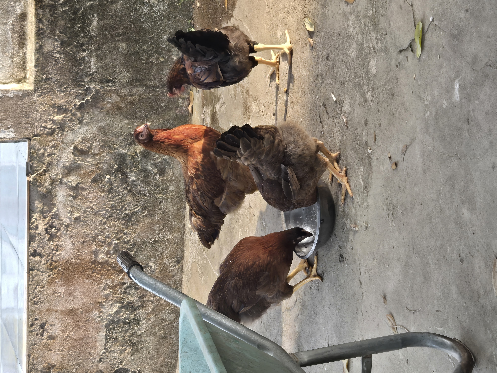

Je pense que personne ne sera surpris de savoir que nous avons aussi des poules qui se baladent librement dans le jardin.

Grâce à elles, nous pouvons avoir des œufs à volonté, et même, pour certaines occasions, du poulet, mais cela reste rare.